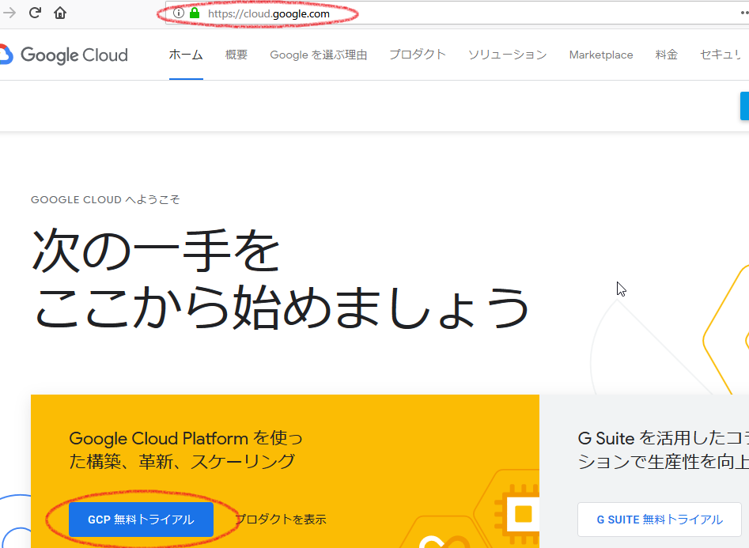

ImageMagickの旧覚書
■概要
ImageMagickを使うと、サイズを変えたサムネイル画像を作成したり、形式（拡張子）が異なる画像に変換できる。（TIF→PNGなど）
ImageMagickはサーバー側にインストールされている。さくらサーバーにもインストールされているが、perl専用のため、専用クラス（imagemagickクラス）が利用できない。しかしsystem関数によるコマンド型で、利用することができる。
ImageMagickはVBやC++などからも利用できる。おそらくJavaでも・・
■設定手順
1.ImageMagickを以下のサイトからダウンロードする。
ダウンロードサイト：http://imagemagick.org/script/binary-releases.php#windows
いくつか種類があるが、初回はImageMagick-6.7.4-7-Q8-windows-dll.exeを入手
2.ImageMagickをインストールする。
ImageMagick-6.7.4-7-Q8-windows-dll.exeを実行し、ウィザードに従ってゆく。途中perl用,C++用などの選択があるが、とりあえずperl用にチェックを入れておけばよい。（チェックなしでも問題ない可能性もある）
3.PC再起動
環境パスへ設定されると思われる。
4.PHP用拡張ライブラリをダウンロード
ダウンロードサイト：http://valokuva.org/outside-blog-content/imagick-windows-builds/080709/
拡張ライブラリはいくつか種類があるが、とりあえず、環境によりどれが動作するか不明のため、すべて入手。
拡張ライブラリにはphp_imagick_dyn-Q16.dll、 php_imagick_st-Q16.dllなどがある。
5.PHP用拡張ライブラリをPHPディレクトリの指定場所に配置する。
配置場所の例としてC:¥web¥PHP¥ext
6.php.iniに設定を追加
以下の記述を追加する。
extension_dir = "C:¥web¥PHP¥ext"
extension=php_imagick_st-Q16.dll
extension_dirはextディレクトリを有効にするための設定かと思われる。extディレクトリはデフォルトでは存在しないため。ImageMagickとは無関係のライブラリでも利用する場合があるので、既存がないか要確認。
extensionには、上記でダウンロードした、拡張ライブラリ名を指定。複数の拡張ライブラリをダウンロードしたが、そのうち動作する拡張ライブラリの名前を指定。動作確認はApacheの再起動で確認できる。動作不能な拡張ライブラリの場合、エラーがでて再起動に失敗する。
Apacheを再起動を忘れずに。
■サンプルコード（クラス利用型）
<?
$im = new imagick( '../files/023.TIF' );
$im->thumbnailImage( 200, 0);
$im->writeImage( '../files/023.png' );
echo "test003 success!!";
?>
■サンプルコード２（system関数利用型）
<?
system("convert -geometry 20% 023.TIF 023.png");
echo "success!!";
?>
※convertコマンドの使い方
http://www.envinfo.uee.kyoto-u.ac.jp/user/susaki/image/magick_process.html
■参考サイト
http://www.elxsy.com/2009/07/installing-imagemagick-on-windows-and-using-with-php-imagick/
http://q.hatena.ne.jp/1101107667
http://blog.quall.net/linuxserver/505/
2012-1-17
ページネーション
デモ
<?php
$page_no = 0;
if(!empty($_GET['page_no'])){
$page_no = $_GET['page_no'];
}
$base_url = "/sample/php/a040/pagenation/pagenation.php";
$all_data_cnt = 100;
$row_limit = 10;
$midasi_cnt = 5;
$params = ['a' => 'neko' , 'b' => 'buta'];
$res = createpagenationHtml($base_url, $page_no, $all_data_cnt, $row_limit, $midasi_cnt, $params);
echo $res['mokuji'];
/**
* ページネーション用の目次HTMLを作成する
* @param int $page_no 現在のページ番号（0から開始）
* @param int $all_data_cnt 全データ数
* @param int $row_limit 行制限数(LIMIT)
* @param int $midasi_cnt 表示するペースの数
* @param array $params リンクのURLに付加するパラメータ（キー、値）
* @param array $option
* - page_field ページフィールド名： def→ page_no
* @return array ページネーションデータ
*/
function createpagenationHtml($base_url, $page_no, $all_data_cnt, $row_limit, $midasi_cnt, $params, $option = array()){
// ページネーションデータ
$pagenationData = array(
'mokuji'=>'', // 目次HTML
'page_prev_link'=>'',
'page_next_link'=>'',
'page_top_link'=>'',
'page_last_link'=>'',
'query_str'=>'',
'base_url' => $base_url,
'page_no' => $page_no,
'all_data_cnt' => $all_data_cnt,
'row_limit' => $row_limit,
'midasi_cnt' => $midasi_cnt,
);
if($all_data_cnt == 0) return $pagenationData;
if(empty($row_limit)) return $pagenationData;
// オプションの初期化
if(empty($option['page_field'])) $option['page_field'] ='page_no';
$page_field = $option['page_field'];
//▼ページネーションを構成する総リンク数をカウントする。
$allMdCnt = ceil($all_data_cnt / $row_limit);
$md2 = $allMdCnt;
if($md2 > $midasi_cnt){
$md2 = $midasi_cnt;
}
$linkCnt =4 + $md2;
//▼最終ページ番号を取得
if($md2 > 0){
$lastPageNo = $allMdCnt-1;
}
$strParams='';
if(!empty($params)){
//▼その他パラメータコードを作成する。
foreach($params as $key=>$val){
if($val !== null && $val !== '')
$strParams = $strParams.'&'.$key.'='.$val;
}
}
//▼最戻リンクを作成
$page_top_link = '';
$rtnMax = '<<';
if($page_no > 0){
$url = "{$base_url}?{$page_field}=0{$strParams}";
$page_top_link = $url;
$rtnMax="<a href='{$url}'>{$rtnMax}</a>";
}
//▼単戻リンクを作成
$rtn1='<';
$page_prev_link = '';
if($page_no > 0){
$p=$page_no - 1;
$url = "{$base_url}?{$page_field}={$p}{$strParams}";
$page_prev_link = $url;
$rtn1 = "<a href='{$url}'>{$rtn1}</a>";
}
//▼単進リンクを作成
$page_next_link = '';
$next1='>';
if($page_no < $lastPageNo){
$p=$page_no + 1;
$url = "{$base_url}?{$page_field}={$p}{$strParams}";
$page_next_link = $url;
$next1 = "<a href='{$url}'>{$next1}</a>";
}
//▼最進リンクを作成
$page_last_link = '';
$nextMax='>>';
if($page_no < $lastPageNo){
$p=$lastPageNo;
$url = "{$base_url}?{$page_field}={$p}{$strParams}";
$page_last_link = $url;
$nextMax="<a href='$url'>{$nextMax}</a>";
}
//▼見出し配列を作成
$fno=$lastPageNo - $md2 + 1;
if($page_no < $fno){
$fno=$page_no;
}
$lno = $fno + $md2 - 1;
for($i = $fno; $i <= $lno; $i++){
$pn=$i+1;
if($i!=$page_no){
$url = "{$base_url}?{$page_field}={$i}{$strParams}";
$midasiList[]="<a href='$url'>{$pn}</a>";
}else{
$midasiList[]=$pn;
}
}
//▼HTML組み立て
$html = "<div id='page_index'>";
$html .= "{$rtnMax} ¥n";
$html .= "{$rtn1} ¥n";
foreach($midasiList as $key=>$val){
$html .= "{$val} ¥n";
}
$html .= "{$next1} ¥n";
$html .= "{$nextMax} ¥n";
$html .= "</div>¥n";
// クエリ文字列
$query_str = "{$page_field}=0{$strParams}";
$pagenationData['mokuji'] = $html;
$pagenationData['page_prev_link'] = $page_prev_link;
$pagenationData['page_next_link'] = $page_next_link;
$pagenationData['page_top_link'] = $page_top_link;
$pagenationData['page_last_link'] = $page_last_link;
$pagenationData['query_str'] = $query_str;
return $pagenationData;
}
?>
2018-11-16
タグ除去
$test_str = "
<div class=¥"yohaku¥"></div>
<ol class=¥"breadcrumb¥">
<li><a href=¥"/¥">ホーム</a></li>
<li><a href=¥"/sample¥">サンプルソースコード</a></li>
<li><a href=¥"/sample/php¥">PHP ｜ サンプル</a></li>
<li>タグ除去</li>
</ol>
<p>TEST</p>
";
echo '<p>出力</p><pre>';
$test_str = strip_tags($test_str,'<a><p>'); // AタグとPタグだけ除外
echo $test_str;
echo '</pre>';
デモ
2018-11-27
GCPへの登録から「Google Translate API」をPHPで動かすところまでの手順
Google Translate APIは無料期間もあるが有料サービスなので注意。
手順
まずはGCP（Google Clound Platform）に登録する必要がある。
登録には使用可能なクレジットカードまたはデビッドカードが必要。

登録が出来たら、GCPの管理画面が表示される。
後の手順でプロジェクトIDが必要になるのでプロジェクトIDの控えを保持しておく。
「Google Translate API」を有効にするため、「Google Translate API」の管理ページに移動する。
検索テキストボックスに「Google Translate API」を入力して検索する。
「Clound Translation API」を選択
「有効にする」ボタンを押して、「Google Translate API」を使えるようにする。
続いて「キー」を取得するため左側メニューの「認証情報」からキーを確認する。（無ければキーを作成する）
続いてPHP側。
composerで専用ライブラリ「TranslateClient」をインストールする。composer.json
{
"require": {
"google/cloud-translate": "*"
}
}
「Clound Translation API」をPHPで使用してみる。
// composerでインストールしたライブラリをインクルードする。
require_once 'vendor/vendor/autoload.php';
// 「Clound Translation API」使うためのライブラリを使用宣言する。
use Google\Cloud\Translate\TranslateClient;
// 「プロジェクトID」をセットする
$projectId = 'api-project-5779xxxxxxxxx';
// 認証情報で確認したキーをセットする。
$apiKey = 'AIzaSyBFdIWjxxxxxxxxx';
// 「TranslateClient」クラスを呼び出し
$translate = new TranslateClient([
'projectId' => $projectId,
'key' => $apiKey,
]);
// 翻訳する言語を指定。
$lang = "en"; // 英語
// 翻訳開始
$result = $translate->translate("私の猫を捕まえてください。
array(4) { ["source"]=> string(2) "ja" ["input"]=> string(82) "私の猫を捕まえてください。
この猫はキジトラの雄です。" ["text"]=> string(59) "Please catch my cat.
This cat is a males of the quail." ["model"]=> NULL }
PHPでの「Google Cloud Translation API」の使い方は以上で終わり。
2018-12-10
Google Translate API | 言語リストを取得
PHPプロジェクトにあらかじめ「TranslateClient」をcomposerでインストールしておくこと。
require_once 'vendor/vendor/autoload.php';
use Google\Cloud\Translate\TranslateClient;
//Google APIの「プロジェクトID」
$projectId = 'api-project-5779xxxxxx';
// 認証情報のキー
$apiKey = 'AIzaSyBFdIWjLXlyGV8axxxxxxxxxxxx';
// 「TranslateClient」クラスを呼び出し
$translate = new TranslateClient([
'projectId' => $projectId,
'key' => $apiKey,
]);
// 言語リストを取得
$langList = $translate->languages();
var_dump($langList);
出力
OKarray(104) { [0]=> string(2) "af" [1]=> string(2) "am" [2]=> string(2) "ar" [3]=> string(2) "az" [4]=> string(2) "be" [5]=> string(2) "bg" [6]=> string(2) "bn" [7]=> string(2) "bs" [8]=> string(2) "ca" [9]=> string(3) "ceb" [10]=> string(2) "co" [11]=> string(2) "cs" [12]=> string(2) "cy" [13]=> string(2) "da" [14]=> string(2) "de" [15]=> string(2) "el" [16]=> string(2) "en" [17]=> string(2) "eo" [18]=> string(2) "es" [19]=> string(2) "et" [20]=> string(2) "eu" [21]=> string(2) "fa" [22]=> string(2) "fi" [23]=> string(2) "fr" [24]=> string(2) "fy" [25]=> string(2) "ga" [26]=> string(2) "gd" [27]=> string(2) "gl" [28]=> string(2) "gu" [29]=> string(2) "ha" [30]=> string(3) "haw" [31]=> string(2) "hi" [32]=> string(3) "hmn" [33]=> string(2) "hr" [34]=> string(2) "ht" [35]=> string(2) "hu" [36]=> string(2) "hy" [37]=> string(2) "id" [38]=> string(2) "ig" [39]=> string(2) "is" [40]=> string(2) "it" [41]=> string(2) "iw" [42]=> string(2) "ja" [43]=> string(2) "jw" [44]=> string(2) "ka" [45]=> string(2) "kk" [46]=> string(2) "km" [47]=> string(2) "kn" [48]=> string(2) "ko" [49]=> string(2) "ku" [50]=> string(2) "ky" [51]=> string(2) "la" [52]=> string(2) "lb" [53]=> string(2) "lo" [54]=> string(2) "lt" [55]=> string(2) "lv" [56]=> string(2) "mg" [57]=> string(2) "mi" [58]=> string(2) "mk" [59]=> string(2) "ml" [60]=> string(2) "mn" [61]=> string(2) "mr" [62]=> string(2) "ms" [63]=> string(2) "mt" [64]=> string(2) "my" [65]=> string(2) "ne" [66]=> string(2) "nl" [67]=> string(2) "no" [68]=> string(2) "ny" [69]=> string(2) "pa" [70]=> string(2) "pl" [71]=> string(2) "ps" [72]=> string(2) "pt" [73]=> string(2) "ro" [74]=> string(2) "ru" [75]=> string(2) "sd" [76]=> string(2) "si" [77]=> string(2) "sk" [78]=> string(2) "sl" [79]=> string(2) "sm" [80]=> string(2) "sn" [81]=> string(2) "so" [82]=> string(2) "sq" [83]=> string(2) "sr" [84]=> string(2) "st" [85]=> string(2) "su" [86]=> string(2) "sv" [87]=> string(2) "sw" [88]=> string(2) "ta" [89]=> string(2) "te" [90]=> string(2) "tg" [91]=> string(2) "th" [92]=> string(2) "tl" [93]=> string(2) "tr" [94]=> string(2) "uk" [95]=> string(2) "ur" [96]=> string(2) "uz" [97]=> string(2) "vi" [98]=> string(2) "xh" [99]=> string(2) "yi" [100]=> string(2) "yo" [101]=> string(2) "zh" [102]=> string(5) "zh-TW" [103]=> string(2) "zu" }
通信を行う関係上、処理は遅いので注意。AJAXで利用するのが望ましい。
2018-12-10
xxx
ホーム プログラミングの覚書 PHPの覚書